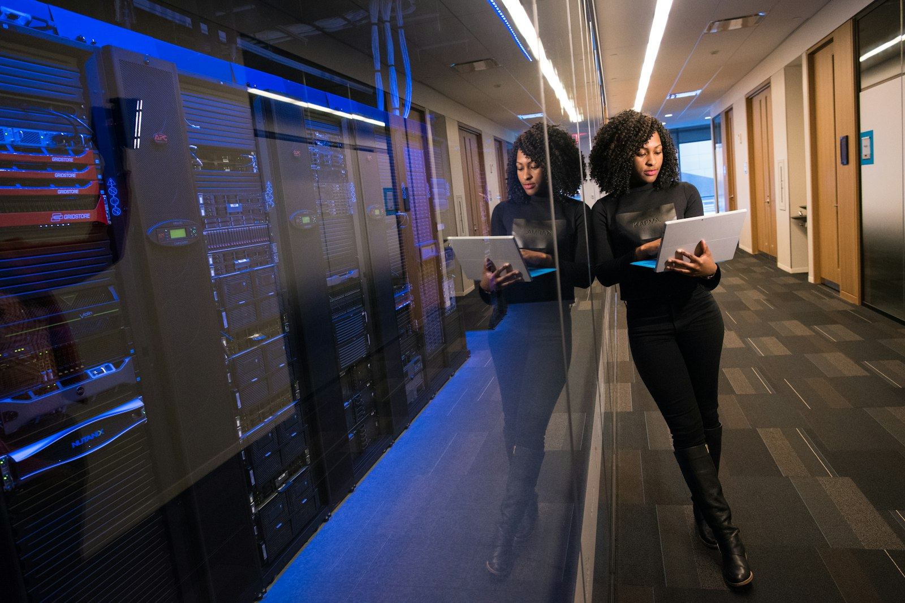

Tout ce que ROOTS a construit depuis 2002, repris des anciens sites roots.ws et roots.services : nos services, notre catalogue de formations, les produits que nous installons et nos offres de recrutement. Votre partenaire pour l’Excellence !
ROOTS est l’une des toutes premières structures de service informatique disposant d’un véritable réseau de partenariat dans le monde. Notre expérience de la mise en œuvre informatique nous permet de formaliser vos problématiques et de proposer des solutions adaptées et créatives.
Nous sommes des partenaires, capables de formaliser les problématiques d’entreprise.
Un élément essentiel du développement et de la notoriété de votre entreprise : des offres formalisées sur les logiciels et systèmes standards ou spécifiques.
Pour les entreprises et organisations du secteur public et privé. ROOTS vous guide dans la transition du système traditionnel vers une gestion électronique des documents performante.
La sauvegarde consiste à dupliquer et mettre en sécurité les données de votre système informatique. Elle se distingue de l'enregistrement des données et de l'archivage.
L'ensemble des moyens techniques, organisationnels, juridiques et humains pour empêcher l'utilisation non autorisée, le mauvais usage, la modification ou le détournement du système d'information.
Notre expertise pour l'administration de vos serveurs et de leurs systèmes.
Une assurance de performance pour votre système informatique.
Conception de logiciels pour votre entreprise ou votre organisation, avec une expérience avérée dans le domaine.
ROOTS est spécialisée dans la conduite de projets web et la conception de sites internet, pour les entreprises, les organisations et les particuliers.
Installation et paramétrage d'Odoo, modules RH et comptabilité, formation. Voir aussi la page Odoo de nos partenaires.
Administration des serveurs Windows
Bureautique
Poste de travail
Pare feu et sécurité réseau
ERP, modules RH et comptabilité
Les programmes ci dessous ont été publiés sur roots.ws. Nous les actualisons et les adaptons sur demande.
| Formation | Durée | Public cible |
|---|---|---|
| Mise à jour des compétences d'administrateur de Windows XP vers Windows 7 | 3 j | Techniciens de support expérimentés sur Windows XP ou Vista |
| Installer et configurer des clients Windows 7 | 3 j | Toute personne devant installer ou assurer le support de Windows 7 |
| Planifier et gérer le déploiement de postes de travail sous Windows 7 | 5 j | Toute personne en charge de déploiements Windows 7 |
| Dépannage et support de Windows 7 | 3 j | Architectes systèmes et réseaux chargés des services de domaine Active Directory |
| Mettre à jour ses compétences d'infrastructure réseau et Active Directory vers Windows Server 2008 | 5 j | Administrateurs Windows Server 2000 ou 2003, exploitants, titulaires d'une certification MCSA ou MCSE |
| Configurer, gérer et maintenir des serveurs Windows Server 2008 R2 | 5 j | Administrateurs système, membres de l'équipe de support |
| Concevoir une infrastructure réseau Windows Server 2008 | 5 j | Architectes chargés d'optimiser des réseaux pour le support de systèmes Windows |
| Concevoir une infrastructure d'annuaire avec Active Directory pour Windows Server 2008 | 5 j | Architectes systèmes et réseaux chargés de l'implémentation des services de domaine |
| Configurer, gérer et dépanner les services de domaines Active Directory Windows Server 2008 | 5 j | Spécialistes Active Directory, administrateurs système |
| Assurer la gestion et la maintenance des serveurs Active Directory sous Windows Server 2008 | 2 j | Administrateurs ou exploitants souhaitant évoluer vers l'administration Active Directory |
| Microsoft Windows Server 2003 | Sur demande | Sur demande |
| Configurer, gérer et dépanner Exchange Server 2010 (MS490) | 5 j | Administrateurs de Microsoft Exchange Server 2003 ou 2007 |
| Actualiser ses compétences d'administrateur vers Exchange Server 2010 | 5 j | Administrateurs Exchange 2003 ou 2007 souhaitant migrer vers la version 2010 |
| Concevoir et déployer une solution de messagerie Exchange Server 2010 | 5 j | Administrateurs, chefs de projet, responsables de l'installation d'un serveur Exchange 2010 |
| Drupal niveau débutant | Sur demande | Sur demande |
| Devenir Responsable de la Sécurité du Système d'Information | 6 j | Responsables ou directeurs informatique, RSSI opérationnels, dirigeants et cadres |
| Acronis administration (sauvegarde) | Sur demande | Sur demande |
| EVault (sauvegarde) | Sur demande | Sur demande |
Sélection publiée sur l’ancien site entre janvier et mai 2022. Disponibilité et prix sur devis.
Un pare feu intelligent. La gestion quotidienne se simplifie grâce à Sophos Central : sauvegardes planifiées, gestion des mises à jour.
4 mai 2022Un accès Ethernet sécurisé et évolutif pour vos appareils filaires et sans fil, avec un contrôle complet de la connectivité du réseau local.
2 mars 2022Point d'accès 802.11ax double bande 1800 Mbps : 1200 Mbps en 5 GHz et 600 Mbps en 2,4 GHz, MU-MIMO, OFDMA, Seamless Roaming, Beamforming.
4 mai 2022Solution complète : contrôleur de points d'accès, points d'accès intérieurs et extérieurs, 802.11ac en 2,4 GHz et 5 GHz, large couverture.
15 avril 2022Des besoins de stockage sans commune mesure avec ceux d'hier : choisir l'équipement de sauvegarde adapté à vos données.
15 avril 2022Un leader mondial de la vidéosurveillance, cinquième acteur mondial de la sécurité selon le classement repris sur l'ancien site.
14 avril 2022Rack 1U, 7 ports Gigabit Ethernet, 1 port combo, 1 cage SFP+, 9 cœurs à 1,2 GHz, 2 Go de RAM, double alimentation, RouterOS L6.
8 avril 2022Full HD 1920 x 1080, profil mince, gestion des câbles, technologie ComfortView qui réduit jusqu'à 60 % des émissions de lumière bleue.
31 janvier 2022Écran réglable en angle, hauteur et position, bordures fines pour une installation sur plusieurs écrans.
28 janvier 2022Processeur Intel Xeon E-2200 à 4, 6 ou 8 cœurs, stockage et mémoire extensibles, iDRAC et OpenManage.
28 janvier 2022Serveur sur site d'entrée de gamme, Intel Xeon E-2224G, 8 Go de mémoire DDR4 ECC, pour la consolidation, le stockage et le partage de fichiers.
28 janvier 2022PC de bureau Dell pour les entreprises, 16 % plus compact que la génération précédente, Pentium Gold G6400, 4 Go, 1 To.
28 janvier 2022Quatre postes publiés sur l’ancien site. Cliquez sur un poste pour lire les missions et le profil.
Poste commercial. Le détail des missions et du profil est communiqué aux candidats.
PostulerLes compétitions ROOTS se déroulaient en formule éclectique, en quatre ou cinq tours, alternativement les samedis et dimanches. Remise des prix en fin de saison 2014 2015, pour les trois meilleurs de chaque série. Chaque tour comptait pour les changements d’index.
Événement passé, publié le 28 novembre 2014Aujourd’hui, notre réseau compte 15 partenaires : voir la liste complète.
Hountigomé, route de l’Aéroport, non loin de la pharmacie de l’aéroport.
Votre partenaire pour l’Excellence !

Dites nous ce dont vous avez besoin. Nous revenons vite avec un devis adapté.
Demander un devis